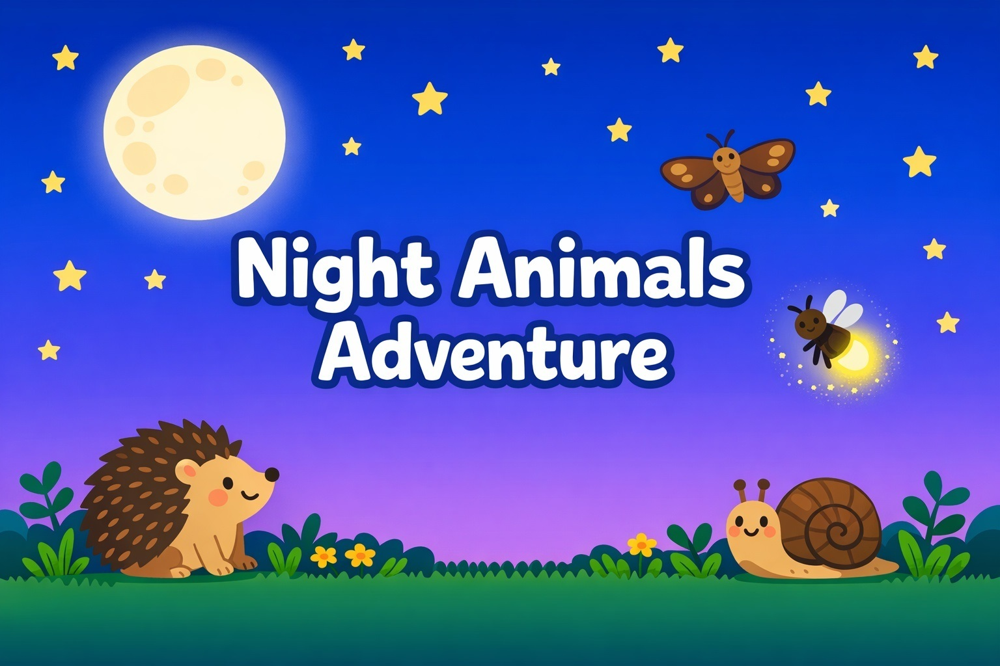

Kelly는 오늘 밤 동물 이야기를 세 문장으로 이어 말할 수 있었어요. 고슴도치를 골라 밤에 나온다고 설명한 뒤 "It is so cute!"(정말 귀여워요)라고 자기 느낌까지 덧붙였어요. 밤이 좋은 이유를 묻자 "I like night. Because I can play games."(밤이 좋아요. 게임을 할 수 있어서요)라고 자기 생활을 넣어 답하기도 했어요. hedgehog와 firefly는 자기 문장 안에서 썼고, 나방을 뜻하는 단어는 한 번 더 듣고 따라 말했어요. 낮 동물과 밤 동물을 나누는 활동에서는 친구가 고른 동물이 어느 쪽인지 자기 차례마다 바로 답했어요. 다시 물으면 한 번 더 또렷하게 말하는, 주저하지 않는 아이였어요.
튜터 노트가 아직 등록되지 않았어요.

오늘은 밤에 나오는 동물들을 배우고, 낮과 밤 중 좋아하는 쪽을 이유와 함께 말해 봤어요. 동물 하나를 골라 세 문장으로 소개하는 연습도 했어요.
I can see your hedgehog. It comes out at night. It is so cute!
각 표현 옆에 Kelly가 어떻게 말했는지 표시했어요. 아래에서 실제로 한 말과 활동 내용을 확인해 보세요.
Kelly가 자기 생각으로 만든 것을 친구들의 아이디어와 함께 모았어요.
같은 주제에 대한 Kelly와 친구들의 답을 함께 살펴봐요. 서로 다른 생각과 표현을 배울 수 있어요.
색으로 표시한 부분에 집중해 말해 봐요. 🔊 들어 보기를 누르면 영어 음성을 들을 수 있어요.
Kelly가 moth를 말하자 튜터가 Moth라고 다시 또렷하게 들려줬어요.
고슴도치 소개 문장을 말한 뒤 튜터가 'hedge… hog' 하고 소리를 끊어 들려주자 Kelly가 다시 'Hedgehog.'라고 말했고, 튜터가 'Excellent.' 했어요.